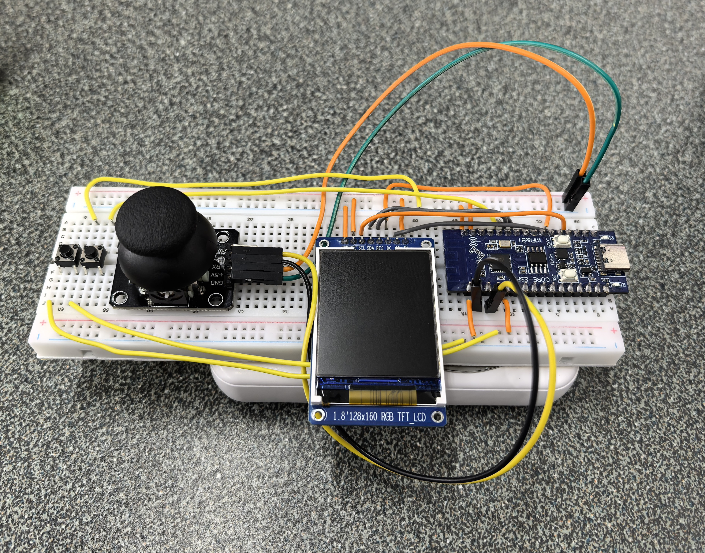
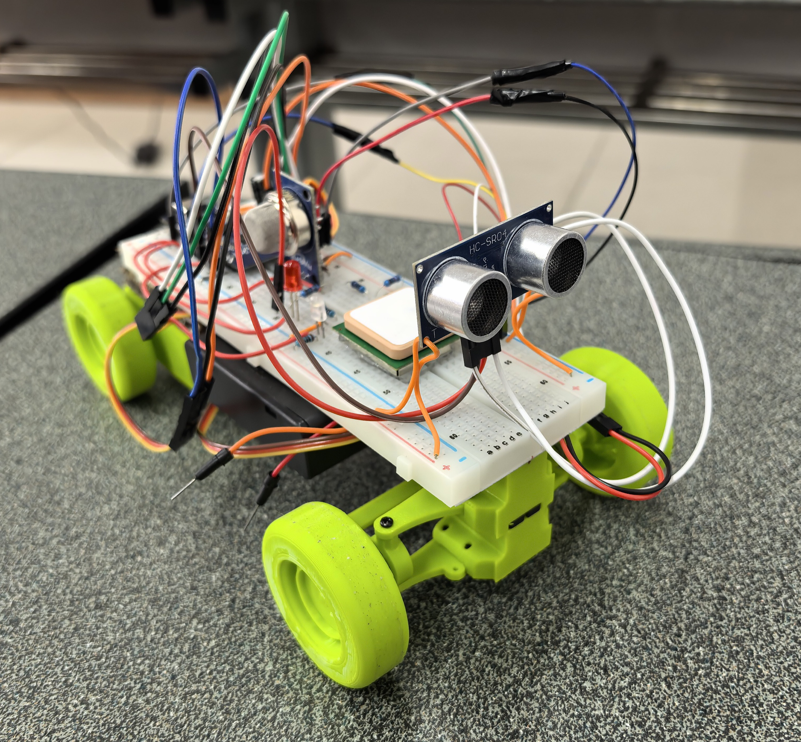

2026年5月 Hackathon · 设计迭代与调试记录

遥控器端 — ST7735 TFT + 单摇杆 + SW1/SW2 按键

小车端 — 3D打印底盘 + 舵机驱动 + 传感器组
两块 ESP32-C3 上电，烧录 ESP-NOW 基础收发代码。小车端每秒发送模拟传感器数据，遥控器端串口打印接收内容。通信 OK
关键决策：两端统一数据包结构体 ctrl_packet_t / sensor_packet_t，用 memcpy 而非逐字段拷贝，确保二进制兼容。
编译通过但板子行为异常：LED 不受控、随机重启。
发现：ESP32-C3 的 GPIO9 内部连接 SPI Flash 的 CS 引脚。用作普通 GPIO 会与 Flash 访问冲突，导致启动崩溃。
BLOCKER// vehicle.ino — 引脚迁移 #define PIN_LED_STATUS 9 → #define PIN_LED_STATUS 10 // remote_control.ino — 引脚迁移 #define PIN_BTN_MODE 9 → #define PIN_BTN_MODE 10
解决 将所有 GPIO9 引用迁移到 GPIO10。此后 GPIO9 列入团队禁用引脚清单。
基础通信正常，但偶尔出现"遥控信号超时"。在 onDataRecv 回调中加入收包计数器后，发现收包率仅 ~1 pkt/s（遥控端以 25Hz 发送，应收 ~25 pkt/s）。
诊断过程：
peer.channel = 0 让 WiFi 栈自动选信道，两块板子随机漂移到不同信道// 改前
esp_now_peer_info_t peer = {};
peer.channel = 0; // 自动 → 不可靠
// 改后
#include <esp_wifi.h>
WiFi.disconnect();
esp_wifi_set_channel(1, WIFI_SECOND_CHAN_NONE); // 强制锁定信道1
peer.channel = 1;
结果 收包率从 ~1 pkt/s 跃升至 220+ pkt/s，"遥控信号超时"彻底消失。
通信正常（收包率 220+），控制指令非零，串口输出的脉宽计算值正确（1000-2000μs），但舵机纹丝不动。
诊断：用 LED+220Ω 电阻测试 GPIO 输出引脚，LED 不亮 → 确认 GPIO 实际无 PWM 波形输出。
根因：ESP32 Arduino Core 3.3.8 下 ledcAttach(pin, freq, res) + ledcWrite(pin, duty) API 不产出实际波形，疑似库版本内部通道分配兼容问题。
// 改前 — LEDC API (Core 3.3.8 不工作) ledcAttach(PIN_DRIVE_SERVO, 50, 16); ledcWrite(PIN_DRIVE_SERVO, usToDuty(1500)); // 改后 — ESP32Servo 库 (直接操作硬件定时器) #include <ESP32Servo.h> Servo driveServo; driveServo.attach(PIN_DRIVE_SERVO); driveServo.writeMicroseconds(us);
结果 更换为 ESP32Servo 库后，舵机立即响应。LEDC 方案完全弃用。
收包率 220+ pkt/s 已达 ESP-NOW 代码极限（实测 CPU 空闲率仍有余量，瓶颈在 WiFi 栈调度而非应用层）。MG90S 360° 舵机机械响应时间 50~100ms，是真正的物理瓶颈——电信号再快，齿轮组也跟不上。主 loop 的 delay(5) 已优化为 delay(1)，控制包发送频率设定在 50Hz（每 20ms），在响应速度与 CPU 负载之间取得平衡。
1.8 寸 ST7735 TFT 屏幕初始化后画面右侧和下侧有彩边，左侧和上方显示不全。
尝试路径（全失败）：
| # | initR | rotation | 结果 |
|---|---|---|---|
| 1 | GREENTAB | 1 | 偏左偏上，显示不全 |
| 2 | BLACKTAB | 1 | 不行 |
| 3 | REDTAB | 1 | 不行 |
| 4 | GREENTAB | 0 | 偏左偏上 |
| 5 | BLACKTAB | 0 | 左+下缺失，右+上有彩边 |
| 6 | GREENTAB | 2/3 | 不行 |
| 7 | 自定义 offset 子类 | 任意 | 无效 — setRotation() 内部覆盖了 _colstart/_rowstart |
突破工具：编写了自动边框轮换测试，启动时轮换 4 个 rotation 方向，每个显示 3 秒，无需反复编译。
// 自动化诊断：4方向轮换，每个3秒
for (int r = 0; r < 4; r++) {
tft.setRotation(r);
tft.fillScreen(ST7735_BLACK);
tft.drawRect(0, 0, 128, 160, ST7735_WHITE); // 外框
tft.drawRect(1, 1, 126, 158, ST7735_RED); // 内框
tft.setCursor(50, 60); tft.print("R"); tft.print(r);
delay(3000);
}
最终确认 INITR_GREENTAB + setRotation(0) 无需任何额外偏移。
尝试用 U8g2 + WQY12 中文字体显示中文。但 u8g2.begin(tft) 内部重置了 TFT 寄存器，导致之前调好的 GREENTAB+rotation0 偏移再次错位。放弃
妥协方案：保留英文界面，使用 Adafruit_GFX 内置 6×8px 字体。所有 UI 标签用英文缩写。
每次数据更新调用 tft.fillScreen(BLACK) 全屏擦除，产生明显闪烁。
方案：分离静态标签与动态数据。标签在 page_dirty 时画一次，数据更新时只精准清除数值区域。
// 改前 — 全屏擦除，闪烁明显
void drawDistPage() {
tft.fillScreen(ST7735_BLACK); // 全屏闪
tft.setCursor(0, 10); tft.print("Front:");
tft.setCursor(30, 10); tft.print(dist);
}
// 改后 — 标签一次，数据精准清除
void drawDistPage() {
// 静态标签: 仅 page_dirty 时绘制
if (page_dirty[PAGE_DIST]) {
tft.fillRect(0, RY(1), SW, SH - RY(1), ST7735_BLACK);
tft.setCursor(0, RY(3)); tft.print("Front:"); // 一次
}
// 动态数据: 只清除数值区域
tft.fillRect(30, RY(3), SW-30, ROW_H, ST7735_BLACK); // 只清数值区
tft.setCursor(30, RY(3)); tft.print(dist/10.0, 1);
}
结果 闪烁彻底消除，刷新只发生在数值变化区域。
遥控推前进时舵机转速慢且有明显延迟，推后退时转速正常。转向舵机也有延迟。
诊断过程：
DEBUG_TIMING 开关，输出各阶段耗时（μs）Dist=65535mm（N/A）时前进正常（前30s），30s 硬件自检后 HC-SR04 启用，Dist 跳变 → 避障触发loop() 中舵机更新排在最末尾，前面有三个阻塞源：pulseIn() 阻塞 30ms、GPS while(available) 无界循环、esp_now_send() 占用 WiFi。遥控端以 50Hz 发送，车端实际舵机更新间隔 30-50ms，延迟累积。
// ★ FreeRTOS 独立任务，优先级 2（高于默认 loop_task 优先级 1）
void servoTask(void *pvParameters) {
TickType_t lastWakeTime = xTaskGetTickCount();
while (1) {
int8_t eff_spd = applyObstacleLimit(incoming_ctrl.speed);
setDriveSpeed(eff_spd);
setSteering(incoming_ctrl.steering);
vTaskDelayUntil(&lastWakeTime, pdMS_TO_TICKS(20)); // 精确 50Hz
}
}
// setup() 中:
xTaskCreate(servoTask, "servo", 2048, NULL, 2, &servoTaskHandle);
两条路径同时修改 incoming_ctrl.speed，产生 100↔30 高频振荡：ESP-NOW 回调写入 100 → 主 loop 避障覆盖为 30 → 回调再次写入 100 → 循环。前进时舵机在 100% 和 30% 之间抖动。
// ★ 统一限速入口 — 只在写入舵机前最后一刻施加
int8_t applyObstacleLimit(int8_t raw_speed) {
uint16_t d = outgoing_sensor.distance_mm;
if (d == 65535) return raw_speed; // 无数据，不限制
if (d < DISTANCE_STOP_MM) return (raw_speed > 0) ? 0 : raw_speed;
if (d < DISTANCE_ALERT_MM) return (raw_speed > 20) ? 20 : raw_speed;
return raw_speed;
}
// incoming_ctrl.speed 保持遥控器原始值不变
// 限速在 servoTask 和 onDataRecv 中通过 applyObstacleLimit() 统一施加
pulseIn() 可能捕获 ~5μs 噪声脉冲，整数除法后 distance_mm=0。避障条件 0 < STOP(150) 成立，且只拦截 speed > 0（前进），后退完全不受影响——这解释了前进/后退的不对称性。
// ① ISR 替代 pulseIn() — 消除 30ms 阻塞
void IRAM_ATTR hcsr04EchoISR() {
uint8_t level = digitalRead(PIN_HCSR04_ECHO);
if (level == HIGH) {
if (hcsr04_state == HCSR04_TRIGGERED)
hcsr04_echo_start = micros();
} else {
if (hcsr04_state == HCSR04_TRIGGERED && hcsr04_echo_start > 0) {
unsigned long dur = micros() - hcsr04_echo_start;
// ② 脉宽校验: 120us~25000us = 2cm~4.3m, 超出即噪声
if (dur >= 120 && dur <= 25000) {
hcsr04_echo_dur = dur;
hcsr04_echo_ready = true;
}
}
hcsr04_state = HCSR04_IDLE;
}
}
// ③ 滑动窗口中位数滤波 (5样本) — 单个脉冲噪声被过滤
static uint16_t win[5];
// ... 排序取中位数 ...
outgoing_sensor.distance_mm = s[2]; // 中位数
结果 修改前 Dist 值每秒几十次剧烈跳变（23↔31↔150↔2632mm），修改后读数稳定在合理的聚类值。前进/后退响应对称，转向延迟消除。
原有 MODE_BTN 切换割裂了驾驶和数据查看；菜单导航复杂；SW2 按键无响应（GPIO19 被 USB D+ 占用）。
// 改后 — 四页面直接切换，摇杆始终控制小车
enum Page { PAGE_DRIVE, PAGE_DIST, PAGE_GPS, PAGE_AIR, PAGE_COUNT };
// SW1=下一页 SW2=上一页
if (btn(PIN_JOY1_SW)) { current_page = (current_page + 1) % PAGE_COUNT; }
if (btn(PIN_JOY2_SW)) { current_page = (current_page + 3) % PAGE_COUNT; }
// 摇杆始终控制 — 不受页面切换影响
outgoing_ctrl.speed = readJoy(PIN_JOY1_Y); // Y=前进后退
outgoing_ctrl.steering = -readJoy(PIN_JOY1_X); // X=转向(取反)
原有速度条从左边延伸，0 速时填充一半，不直观。改为中位线零速设计：右绿前进、左红后退、0 速空条。
// 改前 — 0速时填半条，含义模糊
int b = map(speed, -100, 100, 0, SW); // -100→0, 0→64, 100→128
if (speed >= 0) tft.fillRect(0, y, b, h, GREEN); // 0速时填半条
else tft.fillRect(mid, y, b-mid, h, RED); // 负数计算混乱
// 改后 — 中位线=零速，右绿前进，左红后退，0速空条
int mid = SW / 2;
tft.drawRect(0, y, SW, 8, BLUE);
tft.drawLine(mid, y, mid, y+8, WHITE); // 零位中线
if (speed > 0) {
int len = map(speed, 0, 100, 0, mid);
tft.fillRect(mid, y+1, len, 6, GREEN); // 中→右绿色前进
} else if (speed < 0) {
int len = map(-speed, 0, 100, 0, mid);
tft.fillRect(mid - len, y+1, len, 6, RED); // 中←左红色后退
}
// speed==0: 空条，不填充
GPS 模块户外绿灯闪烁（已定位），但遥控器屏幕经纬度/卫星数始终为零。
诊断：HardwareSerial::begin(baud, config, rxPin, txPin) 的 RX/TX 参数顺序搞反。
// 改前 — RX 和 TX 传反了 #define PIN_GPS_TX 7 // 接 GPS 模块 TX → 应为 ESP32 RX #define PIN_GPS_RX 8 // 接 GPS 模块 RX → 应为 ESP32 TX gpsSerial.begin(9600, SERIAL_8N1, PIN_GPS_RX, PIN_GPS_TX); // ← RX=8, TX=7 反了! // 改后 gpsSerial.begin(9600, SERIAL_8N1, PIN_GPS_TX, PIN_GPS_RX); // ← RX=7, TX=8 正确
教训 HardwareSerial::begin() 参数顺序是 (rxPin, txPin)，引脚宏命名容易产生歧义。
舵机中位不正，车轮初始偏左。初次误判为右偏，STEER_CENTER_US 从 1500 调到 1470。上车测试后用户纠正为左偏，改为 1530（向右修正 30μs）。
#define STEER_CENTER_US 1530 // 从 1500 向右修正 30μs
// 微调方法: 减小=向左修正, 增大=向右修正, 每次调 10~30μs 上车测试
摇杆推左但车轮右转，推右却左转。用户反馈"屏幕文字显示和车轮实际方向一致"，说明显示逻辑正确，只需修正输入映射。
// 改前 int8_t t = readJoy(PIN_JOY1_X); // 改后 int8_t t = -readJoy(PIN_JOY1_X); // 仅取反输入，不改显示标签
| 轮次 | ALERT (预警) | STOP (刹停) | 警报区限速 | 蜂鸣间隔 | 说明 |
|---|---|---|---|---|---|
| 初始 | 300mm | 150mm | 30 | 250ms | 原始值 |
| 第1轮 | 400mm | 200mm | 20 | 150ms | 整体提升 |
| 第2轮 | 500mm | 300mm | 20 | 150ms | 最终配置 |
最终配置：50cm 开始预警减速+LED闪烁，30cm 直接刹停禁止前进。
测试环境需要 0-400 的小量程，而非原始 0-4095。
| 项目 | 改前 | 改后 |
|---|---|---|
| 进度条上限 | 4095 | 400 |
| Good | < 1000 | < 100 |
| Fair | 1000~1999 | 100~199 |
| Poor | >= 2000 | >= 200 |
| 模块 | 型号 | 数量 | 接口 | 用途 |
|---|---|---|---|---|
| 主控 ×2 | ESP32-C3 (RISC-V 160MHz) | 2 | — | 小车端 + 遥控器端 |
| 驱动舵机 | MG90S 360° 金属齿轮 | 1 | GPIO1 (PWM) | 前进/后退驱动 |
| 转向舵机 | MG90S 360° 金属齿轮 | 1 | GPIO2 (PWM) | 阿克曼转向 |
| TFT 屏幕 | 1.8" ST7735 128×160 SPI | 1 | SPI (CS4/DC5/MOSI7/SCK8) | 遥控器显示 |
| 摇杆模块 | 双轴电位器 + 按键 | 1 | ADC0(X)/ADC1(Y)+GPIO18(SW) | 速度+转向输入 |
| 按键 | 轻触开关 | 1 | GPIO10 (INPUT_PULLUP) | SW2 上一页 |
| 超声波 | HC-SR04 | 1 | GPIO6(Trig)/GPIO5(Echo,中断) | 前方避障测距 |
| 空气质量 | MQ-135 | 1 | ADC GPIO0 | 空气质量检测 |
| GPS | VK2828U7G5LF (UART) | 1 | UART1 (RX7/TX8) | 经纬度+卫星数 |
| LED | 5mm 红/绿 + 220Ω | 2 | GPIO10/GPIO4 | 状态+警告指示 |
| 电源 | 4×AA 电池盒 (6V) | 1 | — | 全系统同源供电 |
| 电容 | 电解电容 100~1000μF | 1 | 并电源入口 | 缓冲舵机启动电流 |
| 层级 | 技术 | 说明 |
|---|---|---|
| MCU 平台 | ESP32-C3 (RISC-V) | Arduino Core 3.3.8 |
| 无线通信 | ESP-NOW (2.4GHz 信道1) | 单播模式，控制 50Hz / 传感器 2Hz |
| 舵机驱动 | ESP32Servo 库 | 硬件定时器直接 PWM，弃用 LEDC |
| 实时任务 | FreeRTOS | 独立舵机更新任务，优先级2，50Hz |
| 显示 | Adafruit_GFX + ST7735 | 四页面局部刷新 UI |
| GPS 解析 | TinyGPS++ | NMEA 0183 协议解析 |
| 测距 | HC-SR04 中断 + 中值滤波 | CHANGE 中断替代 pulseIn() |
| ADC | ESP32 12-bit SAR ADC | MQ-135 模拟读取 + 8 样本均值滤波 |
数据流:
遥控器: 摇杆ADC → readJoy() → outgoing_ctrl → esp_now_send() → 50Hz
↕ ESP-NOW 信道1
小车端: onDataRecv() → incoming_ctrl → applyObstacleLimit() → servoTask 50Hz → 舵机
readSensors() → outgoing_sensor → esp_now_send() → 2Hz → 遥控器 TFT 显示
任务架构 (小车端 FreeRTOS):
loop_task (优先级1): GPS喂入 → 传感器读取 → 超时检测 → 避障LED → 数据发送
servoTask (优先级2): 每20ms精确执行, 舵机控制与避障限速统一入口
关键参数:
CTRL_TIMEOUT_MS = 2000 # 遥控超时2秒自动停车
DISTANCE_ALERT_MM = 500 # 50cm 预警减速
DISTANCE_STOP_MM = 300 # 30cm 刹停
STEER_CENTER_US = 1530 # 转向中位微调
SERVO_HZ = 50 # 舵机更新频率
| 文件 | 说明 | 下载 |
|---|---|---|
vehicle.ino |
小车端固件 (ESP32Servo, FreeRTOS舵机任务, HC-SR04中断测距, 避障限速) | 📥 下载 |
remote_control.ino |
遥控器端固件 (四页面系统, 单摇杆, SW1/SW2切页, 局部刷新) | 📥 下载 |
遥控小车建模.zip |
3D 建模源文件 (底盘、传动箱、转向模块、轮毂轮胎等全部 STL) 开源出处：B站 苦工创客Matt · BV1Tt5T6MEDb |
📥 下载 |
反思：ESP-NOW 的 channel=0"自动"选项在各平台行为不一。WiFi 栈在信道间扫描时收包率剧烈波动。强制性信道锁定是本项目通信链路的第一守则。今后所有 ESP-NOW 项目直接锁定信道，不再相信"自动"。
反思：库版本兼容性是嵌入式开发最隐蔽的坑。代码逻辑全对但硬件无输出 → 一定是抽象层出了问题。LED+电阻测试法是最简诊断工具，10秒确认问题不在代码逻辑而在硬件抽象层。
反思：这是本项目最复杂的 Bug——三个独立问题叠加，每个只影响前进方向。最大的教训是："单向不对称 Bug"几乎总是由方向相关条件触发（避障只拦截 speed>0）。调试时要特别注意那些看起来与问题无关的条件分支。FreeRTOS 独立任务对于消除 loop() 阻塞是终极方案，但代价是引入了竞态风险，必须通过统一写入口来消除。
反思：ST7735 有多种子型号（GREEN/BLACK/RED/GREENTAB160x80 等），每种对应不同的显示偏移寄存器初始值。自动轮换测试工具（4 方向 × 3 秒）比手动改代码效率提升 10 倍。自定义 offset 子类方法失败的原因是 setRotation() 内部会重新读取 tabcolor 数组覆盖手动设置——不看库源码就写"修复"是无效的。
反思：ESP32-C3 的 GPIO 并非全是"通用"的。GPIO9(Flash CS)、GPIO11(VDD_SPI)、GPIO18/19(USB) 都有特定功能。选引脚前应先查芯片数据手册的 Pin Layout 章节。
反思：两个图形库共用同一个 SPI 外设时，后启动的库会覆盖前者的寄存器配置。合理的解决方案是使用 Adafruit_GFX 的自定义字体或 bitmap 方式显示中文，但 Hackathon 时间有限，英文完全可接受。
反思：宏命名 PIN_GPS_TX 的歧义是根源——它指的是 GPS 模块的 TX 还是 ESP32 的 TX？把宏名改为 PIN_GPS_TO_ESP / PIN_ESP_TO_GPS 可永久避免此问题。
反思：AA 电池内阻是天然的"软降压"——无需额外的稳压模块。舵机独立供电（不经过 ESP32 板载 LDO）但必须共地。电解电容并在电源入口是缓冲舵机堵转电流的最简方案。
Serial.println()，调通后降频。收包计数器、时序监控 DEBUG_TIMING 是本次调试最高效的信息源。INITR_GREENTAB + rotation 0、STEER_CENTER_US = 1530、esp_wifi_set_channel(1)——这些"最终答案"一旦确认立即记下，不再反复试错。speed > 0 的逻辑。追踪所有对 speed 有条件判断的代码路径。这次是避障限速 + HC-SR04 噪声 + 竞态三连击。